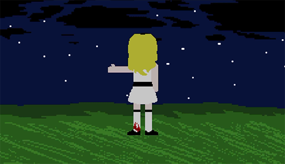
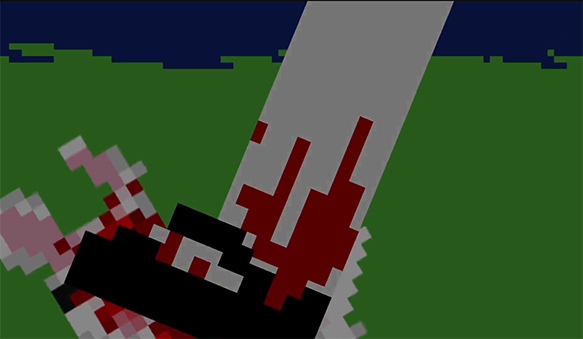

Malissa is from Gurin Mountain; a story about a simulation where 8 people 'spawn' in the middle of nowhere
with
little to no memories of a past life, but of the 8: Malissa seems to know way more than her peers.
Her design
uses what is likely the 5 most common colors in character design: white, black, red, blue and
yellow
(technically skin-color as well).
Her appearance is something ordinary in it's excellence; a visually appealing woman, but a very generic
example
of one.
Her name: 'Malissa' is nice, but very ordinary.
However: the high saturation and contrast and the slightly larger-than-normal eyes may put her in the
uncanny
valley.
She almost matches the appearance of idealized femininity, but something isn't right.

Behaviour
Her appearance is meant to match her behaviour; going through the motions of her fellow characters, but deep
down
having motives, feelings and fears that are so detached from the others, she just can't help but feel
contempt
when she has to 'play along'.
Furthermore: when she is 'playing along' but not really trying, it comes off as uncanny / unsettling because
it
implies she knows a lot more than the other characters, and that whatever she knows makes her indifferent to
the
same things that the regular characters see as threatening.
Her relationship with most of the other characters is that of 'former friend', however, they don't remember
her. In Episode 2 (yet to be released) it's hinted that Malissa is Keith's ex (Keith is the protagonist),
which
partly explains her strange behaviour around him in Episode 1

Weird Things She's Done
When hunting a rabbit, she opts to finish it off by stomping on it (slow death) rather than a quicker more
humane
death. She doesn't care that the main character sees this because she already knows he's not the kind of
person
to mention it to anyone.
She addresses the main character by name, even though he hasn't yet introduced himself.